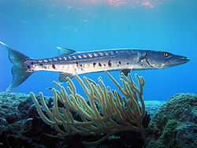

Welcome to the Fish Web Site. Everything you want to know about Fish is in this web site.
Bass fish live in lakes. The word for fish in Latin is Pisces
Born in Saint Petersburg (then known as Leningrad), Putin studied German in high school and speaks the language fluently.[4][5] He then studied law at the Leningrad State University, graduating in 1975.[6] Putin was a KGB foreign intelligence officer for 16 years, rising to the rank of lieutenant colonel before retiring in 1991 to enter politics in Saint Petersburg. He moved to Moscow in 1996 and joined President Boris Yeltsin's administration, rising quickly through the ranks and becoming Acting President on 31 December 1999, when Yeltsin resigned. Putin won the subsequent 2000 presidential election by a 53% to 30% margin, thus avoiding a runoff with his Communist Party opponent, Gennady Zyuganov.[7] He was re-elected President in 2004 with 72% of the vote.
Born in Saint Petersburg (then known as Leningrad), Putin studied German in high school and speaks the language fluently.[4][5] He then studied law at the Leningrad State University, graduating in 1975.[6] Putin was a KGB foreign intelligence officer for 16 years, rising to the rank of lieutenant colonel before retiring in 1991 to enter politics in Saint Petersburg. He moved to Moscow in 1996 and joined President Boris Yeltsin's administration, rising quickly through the ranks and becoming Acting President on 31 December 1999, when Yeltsin resigned. Putin won the subsequent 2000 presidential election by a 53% to 30% margin, thus avoiding a runoff with his Communist Party opponent, Gennady Zyuganov.[7] He was re-elected President in 2004 with 72% of the vote.